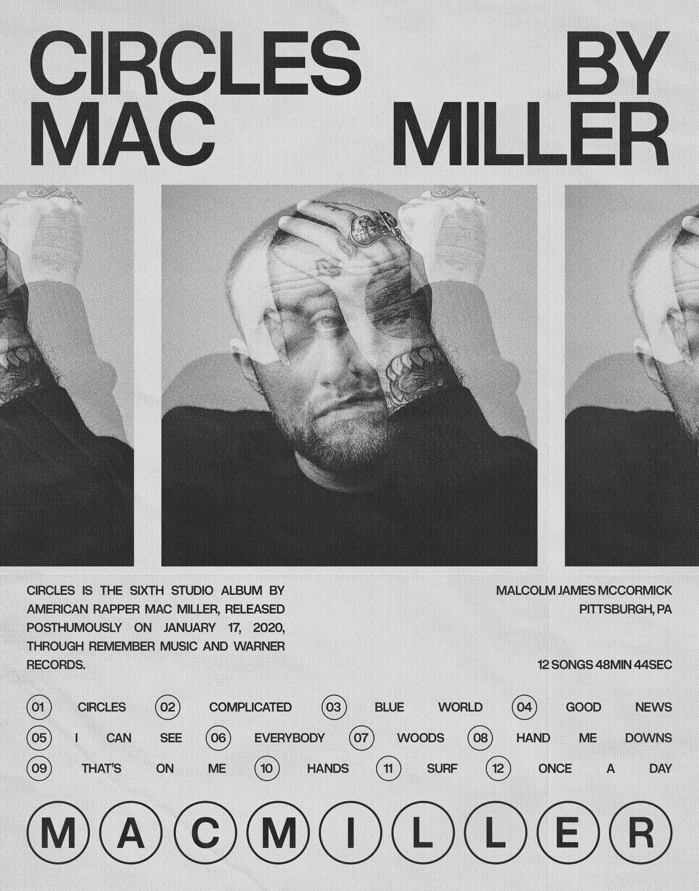
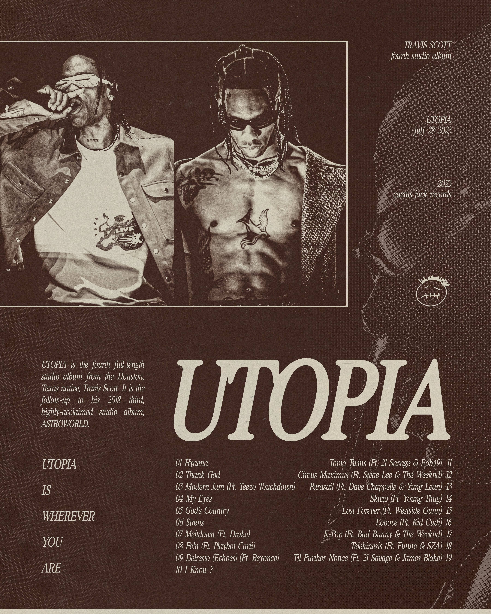

More examples found on my Behance linked at the bottom of the page
Below are a few examples of music-related posters I have created in Adobe Photoshop as fun passion projects to showcase my love for music.
Mac Miller - Circles
In this piece, I incorporated the simplistic style of the original album cover and vinyl art and also included some fun small circles around the numbers on the tracklist to represent the album title.

Mac Miller - Balloonerism
In this piece, I incorporated the balloon face from the original album cover and added text that balloons behind it to represent the album title.

Tyler, The Creator - Call Me If You Get Lost
In this piece, I replicated the art style of this album's era with a colorful and retro vibe.

Kendrick Lamar - GNX
In this piece, I kept it simple and incorporated an image of Kendrick standing in front of the Buick GNX, which is on the album cover.
Travis Scott - Utopia
In this piece, I used the color scheme from one of his shoes since it came out around the time of this album. It also fits his style in real life, including a lot of earthy tones, such as brown, beige, and green.